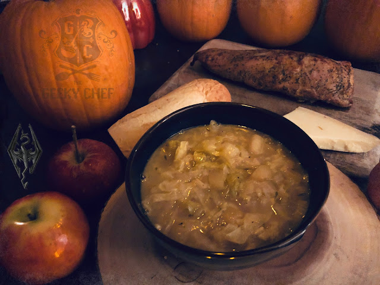

Apple cabbage stew

Description
know everyone's coming off their Thanksgiving feasts, probably living completely on leftovers and just starting to get really sick of them, almost ready to transition from fall/harvest foods into winter treats. Well, I've got one last fall/harvest food for you before it's all sugar cookies and hot chocolate.
Since rearranging my archive, I realized that I am woefully short on Elder Scrolls recipes on this blog. There are quite a few in the Geeky Chef Cookbooks, but only a couple posted here. I've always been intrigued by this stew in Skyrim. It's one of the first things I made in the game (and I'm sure I'm not alone) as it requires two very common ingredients: Apples and Cabbage. And the elusive Salt Pile, of course. Salt is weirdly scarce in Skyrim. My take on this stew is infused with thyme, surprisingly hearty and rich but has a nice, tangy kick. Serve it alongside roasted meats, crusty bread and strong cheese. It's actually pairs really well with all that Turkey you need to get rid of!
Ingredients
- 4 tbs Unsalted Butter
- 1 tbs Olive Oil
- 1/2 large head of Green Cabbage, cored and sliced
- 1 large Onion, chopped
- 2 cloves Garlic, minced
- 8-10 sprigs of Fresh Thyme
- 1.5 quarts Chicken or Vegetable Broth
- 3-4 tbs of Apple Cider Vinegar (or to taste)
- 3 Golden Delicious or Pink Lady Apples, peeled, cored, cut into 1/2-inch cubes
- Salt and Pepper, to taste
Steps
- Melt two tablespoons of the butter with oil in large, thick-bottomed pot or dutch oven over medium-high heat.
- Add the onion, sauté until they start to soften, then add the garlic. Saute for a minute, then stir in the cabbage. Continue to sauté until vegetables wilt and start to brown, stirring occasionally.
- Add the thyme sprigs and sauté for another minute or two.
- Add your broth and the apple cider vinegar, then bring to a boil.
- Once boiling, reduce the heat to medium-low and simmer 15-20 minutes.
- Meanwhile, melt the other two tablespoons butter in a skillet over medium-high heat. Add the apples and sauté until brown and tender, stirring occasionally.
- Remove thyme sprigs from the cabbage stew and add the apples, stirring them in.
- Let the stew simmer on low for another five minutes.
- Season stew with salt and pepper and serve!
Main page